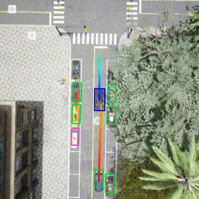
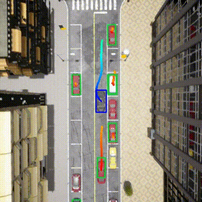
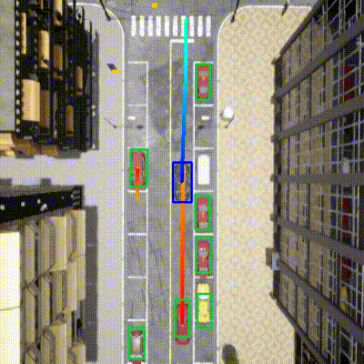
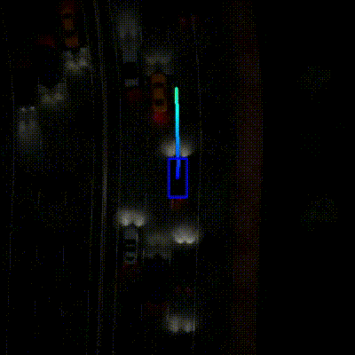
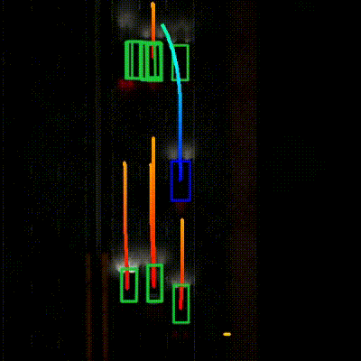
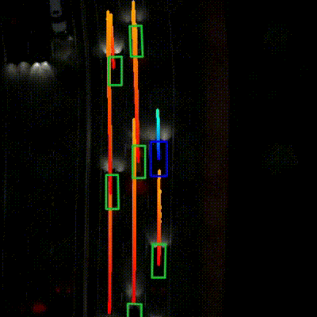
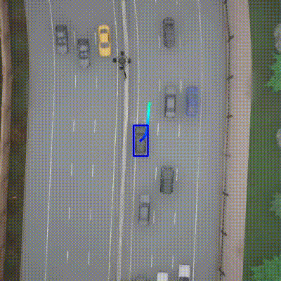
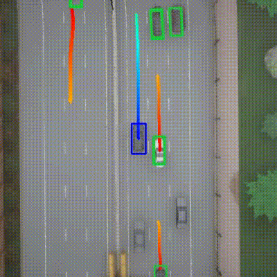
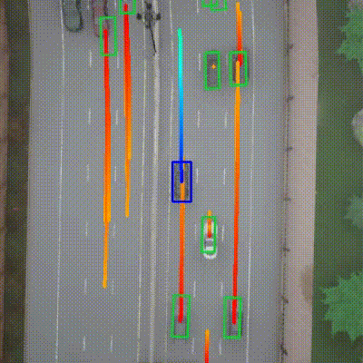

ORION: A Holistic End-to-End Autonomous Driving Framework
by Vision-Language Instructed Action Generation
Abstract
End-to-end (E2E) autonomous driving methods still struggle to make correct decisions in interactive closed-loop evaluation due to limited causal reasoning capability. Current methods attempt to leverage the powerful understanding and reasoning abilities of Vision-Language Models (VLMs) to resolve this dilemma. However, the problem is still open that few VLMs for E2E methods perform well in the closed-loop evaluation due to the gap between the semantic reasoning space and the purely numerical trajectory output in the action space. To tackle this issue, we propose ORION, a holistic E2E autonomous driving framework by vision-language instructed action generation.
ORION uniquely combines a QT-Former to aggregate long-term history context, a Large Language Model (LLM) for driving scenario reasoning, and a generative planner for precision trajectory prediction. ORION further aligns the reasoning space and the action space to implement a unified E2E optimization for both visual question-answering (VQA) and planning tasks. Our method achieves an impressive closed-loop performance of 77.74 Driving Score (DS) and 54.62% Success Rate (SR) on the challenge Bench2Drive datasets, which outperforms state-of-the-art (SOTA) methods by a large margin of 14.28 DS and 19.61% SR.
Comprehensive capabilities of ORION in close-loop simulation
Framework
Main Results
Qualitative Results
Closed loop evaluation in different scenarios
Construction Obstacle Two-Ways
Crossing Bicycle Flow
Hard Break Route
Non-Signalized Left-Turn Enter Flow
Accident
Opposite Vehicle Taking Priority
Highway Cut-In
Qualitatively analysis on Bench2Drive compared ORION with baselines
More details in ORION repository
TCP|UniAD-Base|VAD-Base|ORION
Route 2283: Signalized Junction Left-Turn
TCP: Success

UniAD: Failed

VAD: Success
ORION: Success

Route 3749: Enter Actor Flow
TCP: Success

UniAD: Failed
VAD: Failed
ORION: Success

Route 25418: Parked Obstacle
TCP: Failed
UniAD: Failed
VAD: Success
ORION: Success

Route 26396: Static Cut-In
TCP: Failed
UniAD: Success
VAD: Success
ORION: Success

BibTeX
@article{ORION,
title={ORION: A Holistic End-to-End Autonomous Driving Framework by Vision-Language Instructed Action Generation},
year={2025}
}